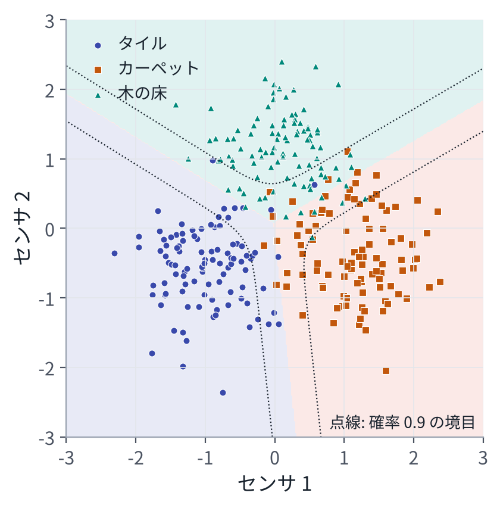

目次
1出力を「分布」として見る
同じ入力 \(x\) でも、正解 \(y\) は 1 つに決まらないことが多い。測定には雑音が乗る。人のお手本は、同じ場面でも毎回少しずつ違う。そこで、モデルが出すものを「答え 1 つ」ではなく「答えの確率分布」と考える。
\[ p_\theta(y \mid x) \]「\(x\) が与えられたときの \(y\) の分布で、形は重み \(\theta\) で決まる」と読む。縦棒の右が条件である。このあとの章に出てくるモデルは、すべてこの形をしている。
2最尤推定
データ \(\mathcal D = \{(x_i, y_i)\}_{i=1}^N\) が、モデルの分布から出てきたと考える。そのときの「このデータが出てくる確率」を、重み \(\theta\) の関数と見たものを尤度という。データが互いに独立なら、積になる。
\[ \prod_{i=1}^{N} p_\theta(y_i \mid x_i) \]尤度が最大になる重みを選ぶのが最尤推定である。積は扱いにくいので対数を取り、符号を変えて最小化の形にする。これを負の対数尤度（NLL）という。
\[ L(\theta) = -\frac{1}{N}\sum_{i=1}^{N} \log p_\theta(y_i \mid x_i) \]深層学習の損失の大半は、これに分布の形を入れたものである。
正規分布を仮定すると、二乗誤差になる
出力が、平均 \(f_\theta(x)\)、分散 \(\sigma^2\) の正規分布に従うとする。
\[ \begin{aligned} &-\log \mathcal N\big(y;\ f_\theta(x),\ \sigma^2\big) \\ &\qquad = \frac{\big(y - f_\theta(x)\big)^2}{2\sigma^2} + \frac{1}{2}\log(2\pi\sigma^2) \end{aligned} \]\(\sigma\) を固定すれば、第 2 項は定数で、第 1 項は二乗誤差の定数倍である。つまり、二乗誤差で学習するとは、「出力に正規分布の雑音が乗っている」と仮定した最尤推定である。同じように、ラプラス分布 \(\propto e^{-|y - f|/b}\) を仮定すると、絶対値の誤差（L1）になる。ロボットの模倣学習でよく使われる L1 損失は、この仮定に対応する（9 章）。
この見方が後で効く。正規分布は山が 1 つである。お手本が「左へ避ける」と「右へ避ける」に分かれているとき、山 1 つの分布を当てはめると、2 つの真ん中（正面）に山が立つ。10 章の拡散とフローは、この問題を解くための方法である。
3分類：softmax と交差エントロピー
クラスが \(K\) 個あるとき、モデルはクラスごとに 1 つずつ数を出す。この数 \(z = (z_1, \dots, z_K)\) をロジットという。ロジットは負にもなり、合計も 1 ではないので、softmax で確率に直す。
\[ p_k = \mathrm{softmax}(z)_k = \frac{e^{z_k}}{\sum_{j=1}^{K} e^{z_j}} \]正解のクラスが \(y\) のとき、負の対数尤度は \(L = -\log p_y\) である。これを交差エントロピー損失という。ロジットについての勾配は、きれいな形になる。
\[ L = -z_y + \log \sum_{j} e^{z_j} \] \[ \frac{\partial L}{\partial z_k} = p_k - \mathbb 1[k = y] \]「予測した確率 − 正解（正解のクラスだけ 1 の並び）」である。正解の確率を上げ、ほかの確率を下げる向きに、確率のずれの分だけ押す。二乗誤差の勾配が「予測 − 正解」の定数倍だったのと同じ形をしている。
ロジットを入力の 1 次式 \(z = Wx + b\) にしたものを、softmax 回帰（多クラスのロジスティック回帰）という。センサの値 2 つから床の種類を当てる例で学習すると、次のようになる。

境目は直線になる。ロジットが入力の 1 次式だからである。曲がった境目が要るときは、3 章のニューラルネットを使う。
出力が確率なので、「どれくらい自信があるか」もわかる。演習の結果では、確率 0.9 以上と答えた点の 99% が正解で、0.6 未満と答えた点の正解は 59% だった。
4温度
softmax の前にロジットを \(T\) で割ると、分布の広がりを変えられる。\(T\) を温度という。
\[ p_k = \frac{e^{z_k / T}}{\sum_j e^{z_j / T}} \]| 温度 \(T\) | \(p_1\) | \(p_2\) | \(p_3\) |
|---|---|---|---|
| 0.5 | 0.867 | 0.117 | 0.016 |
| 1 | 0.665 | 0.245 | 0.090 |
| 2 | 0.506 | 0.307 | 0.186 |
| 10 | 0.367 | 0.332 | 0.301 |
ロジット \(z = (2, 1, 0)\) のとき。演習 2 の (3) で計算した。
\(T \to 0\) で最大のものだけが確率 1 になり、\(T \to \infty\) で一様になる。温度は、言語モデルで文を作るとき（4 章）と、知識蒸留（13 章）で使う。
MPPI を知っていれば。MPPI の重み \(w_k \propto \exp(-S_k/\lambda)\) は、コストの符号を変えたもの \(-S_k\) をロジットとし、\(\lambda\) を温度とした softmax そのものである。\(\lambda\) を小さくすると最良の候補だけを選び、大きくすると平均に近づく。
5KL ダイバージェンス：分布どうしのずれ
2 つの分布 \(p\) と \(q\) のずれを測る量に、KL ダイバージェンスがある。
\[ \mathrm{KL}(p \,\|\, q) = \sum_y p(y)\,\log\frac{p(y)}{q(y)} \ \ge\ 0 \]0 になるのは \(p = q\) のときだけである。距離に似ているが、\(p\) と \(q\) を入れ替えると値が変わる（対称でない）。
交差エントロピー \(H(p, q) = -\sum_y p(y)\log q(y)\) は、エントロピー \(H(p) = -\sum_y p(y)\log p(y)\) と KL に分けられる。
\[ H(p, q) = H(p) + \mathrm{KL}(p \,\|\, q) \]ここで \(p\) をデータの本当の分布、\(q\) をモデル \(p_\theta\) と読む。負の対数尤度の期待値は、まさに交差エントロピーである。
\[ \mathbb E_{y \sim p}\big[-\log p_\theta(y)\big] = H(p) + \mathrm{KL}(p \,\|\, p_\theta) \]\(H(p)\) は重みによらない。したがって、負の対数尤度を小さくすることは、データの分布からモデルの分布への KL を小さくすることと同じである。学習とは、モデルの分布をデータの分布に近づけることだ、と言い換えられる。損失が 0 まで下がらないのは、データ自体のばらつき \(H(p)\) が残るからである。
条件付きの場合は、\(x\) についての期待値を外側に付けるだけで、同じ式になる。\(\mathrm{KL}(p\|q)\) と \(\mathrm{KL}(q\|p)\) の違いは、蒸留の方法を選ぶときに効いてくる（13 章）。
6この先の章との対応
| この章の道具 | 使われる場所 |
|---|---|
| 二乗誤差、L1（正規分布、ラプラス分布） | 行動の回帰（9 章の ACT、11 章の OpenVLA-OFT）、拡散とフローの学習（10 章） |
| softmax と交差エントロピー | 次の単語の予測（4 章）、VLM（8 章）、行動をトークンで出す VLA（11 章）、対照学習（7 章） |
| 温度 | 文や行動の取り出し方（4 章、11 章）、知識蒸留（13 章） |
| KL ダイバージェンス | 学習そのものの意味、ACT の潜在変数（9 章）、蒸留（13 章） |
7演習
演習 2最尤推定、softmax、交差エントロピー、KL
python3 vla_math/ch02_softmax.py出力の一部：
(1) 正規分布の最尤推定
負の対数尤度を最小にする平均 1.9760、標本平均 1.9760
(2) softmax 回帰で、床の種類を当てる
勾配の確認: 式で求めた勾配と数値微分の相対誤差 3.3e-10
0 回目: 交差エントロピー 1.099、検証データの正解率 33.3%
10 回目: 交差エントロピー 0.386、検証データの正解率 93.3%
500 回目: 交差エントロピー 0.172、検証データの正解率 93.1%
確信度 0.0〜0.6: 34 点、そのうち正解 59%
確信度 0.9〜1.0: 709 点、そのうち正解 99%
(4) 交差エントロピー = エントロピー + KL ダイバージェンス
交差エントロピー 0.8869 = エントロピー 0.8018 + KL 0.0851（足すと 0.8869）
見るところ：
- 学習前の交差エントロピー 1.099 は \(\log 3\) である。3 クラスを等しい確率で当てたときの値になっている。
- 「予測 − 正解」の勾配の式が、数値微分と 10 桁近く一致する。
- 交差エントロピーは 0 にならない。3 種類の床の点が重なっている場所があり、そこでは確実には当てられないからである。
8まとめ
- モデルの出力を、条件付きの確率分布 \(p_\theta(y \mid x)\) と見る。この資料のモデルは、すべてこの形である。
- 損失の正体は、負の対数尤度である。正規分布なら二乗誤差、ラプラス分布なら L1、カテゴリ分布なら交差エントロピーになる。
- softmax と交差エントロピーの勾配は「予測 − 正解」である。
- 負の対数尤度を下げることは、データからモデルへの KL を下げることと同じである。学習とは、分布を分布に合わせることである。
9確かめる問題
- 二乗誤差で学習するとき、出力の分布について何を仮定したことになるか。
- softmax と交差エントロピーの勾配 \(p_k - \mathbb 1[k = y]\) を導け。
- 3 クラスの分類で、学習を始める前の交差エントロピーがおよそ \(\log 3\) になるのはなぜか。
- 交差エントロピーの損失が 0 まで下がらないのは、どういうときか。KL の式を使って説明せよ。
10読むもの
※参考文献
- S. J. D. Prince, "Understanding Deep Learning," MIT Press, 2023. 本の全文が公開されている。https://udlbook.github.io/udlbook/
- 斎藤康毅『ゼロから作る Deep Learning ❺ 生成モデル編』オライリー・ジャパン, 2024.